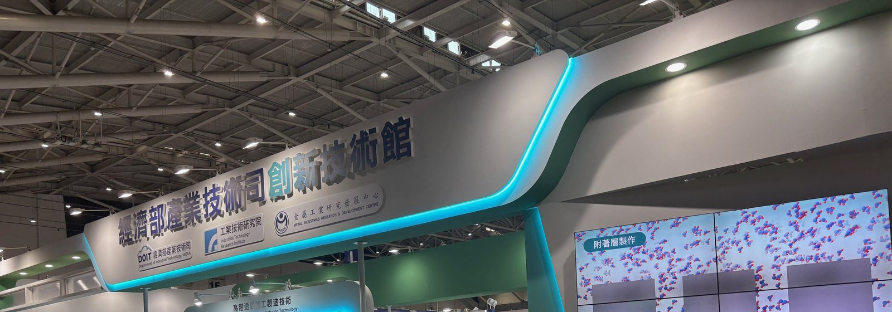
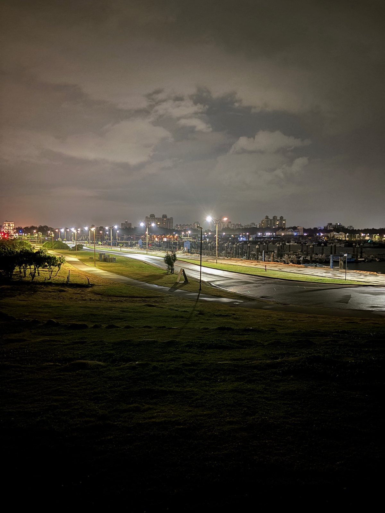
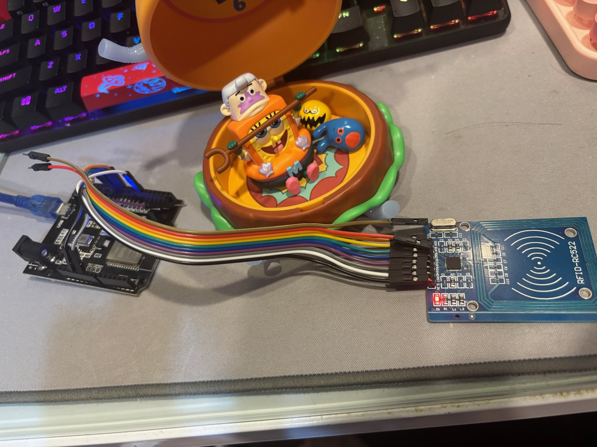

SYSTEM ONLINE _ PORTFOLIO.EXEPORTFOLIO / 2026



SCROLL TO DECODE01 — 04
// ABOUT THE HUMAN
關於我
嗨，我是謝道昇。
在設計與程式之間，尋找更好的表達方式。
我關注網站的畫面，也在意操作時的感受。從需求梳理、介面設計到前端實作，喜歡把複雜內容整理成能被理解、能真正使用的作品。
01 /網頁設計視覺語言與版面節奏
02 /前端開發響應式與互動實作
03 /UI / UX清楚、順手的使用流程